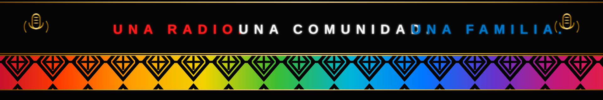

Née dans une chambre à Villa El Salvador en 2008, Radio Caprichos renaît aujourd’hui depuis les Landes de France.
Radio Caprichos est née dans une chambre à Villa El Salvador, au Pérou, à une époque où les jeunes découvraient le streaming, les chats en ligne et les premières radios Internet.
Le chat et la radio formaient une seule communauté. Les auditeurs demandaient des chansons, envoyaient des salutations et partageaient des nuits entières avec les DJs.
Aujourd’hui, Radio Caprichos renaît depuis les Landes de France, avec la même passion : la musique, l’amitié et la communauté.
Création à Villa El Salvador
Pionniers historiques
Renaissance du projet
